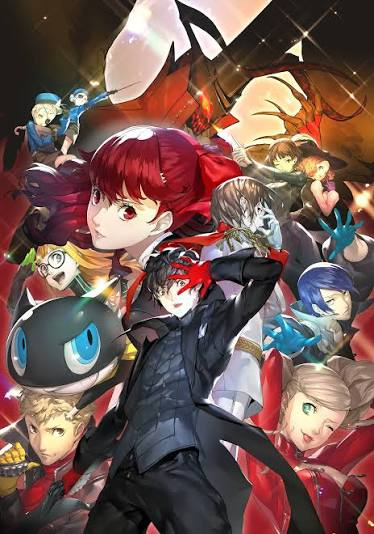
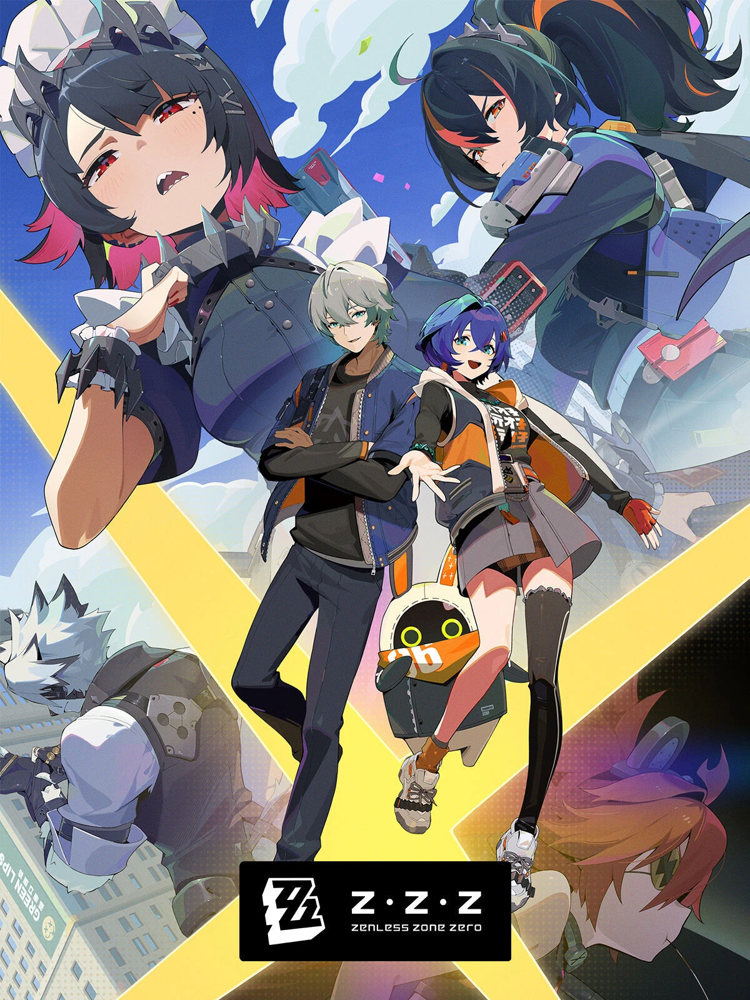
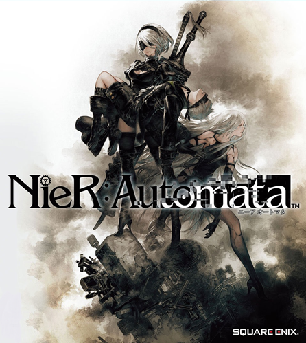
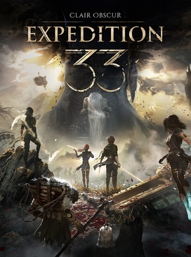
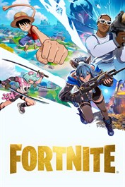

Nesta aba, você descobrirá alguns dos meu repertorio de jogos e como cada um deles me marcou. A lista é relativamente extensa, mas farei com que só os principais estejam aqui!

Esse aqui é tão especial pra mim que se eu explicasse sobre só nesse bloco seria insuficiente. Fiz questão de criar uma pagina só sobre Persona no geral.

Como dito anteriormente, comecei o vicio em 2025, e desde de então me engajei muito. Alem da Ellen Joe eu tambem de personagens como a Zhu Yuan e etc. Mesmo não sendo um grande fã de gacha, tenho quase 1000 horas de registrados e boa parte dos personagens

Eu inicialmente comprei esse jogo de forma despretenciosa, vi numa promoção de black friday e achei interessante. Quando abri o jogo e conheci a historia dele eu fiquei surpreso o quão rico é esse universo, sinceramente foi muito bom eu não ter abandonado após o final A. Eu gostei tanto dessa obra que fiz um esforço para platina-lo de forma legitima, nada contra quem comprou nem todo mundo tem tempo livre kkkkkk. Já adianto que prefiro a A2.

Tá, comparado aos outros o impacto não foi tão grotesco, mas também não posso ignora-lo. Gosto bastante dos temas que a história aborda e também de toda a sua ambientação onirica, alem de alguns dilemas presentes no climax.

Ta, esse aqui ta mais por conta que tenho horas absurdas registradas. Ate voltei a jogar recentemente e ate ta legal recenmente, mas não sou mais aquele que joga quase todo dia... A não ser claro pra achar a porra do token